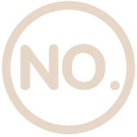

中医药非物质文化遗产总体情况
中医药是我国珍贵的非物质文化遗产。
《中医药发展战略规划纲要（2016—2030年）》重要文件更要求“加强中医药文物设施保护和非物质文化遗产传承，推动更多非
药物中医诊疗技术列入联合国教科文组织非物质文化遗产名录和国家级非物质文化遗产目录。
2006年传统医药作为第九大类进入了国家级非物质文化遗产保护名录，截止2018年9月，国家名录发布四批，中医药项目已有130项入选。
— 针灸 —
- 时间：2006年
- 类别：传统医药
- 地区：中央
-  编号：Ⅸ-5
- 申报地区或单位：中国中医科学院 中国针灸学会

— 中医传统制剂方法 —
- 时间：2006年
- 类别：传统医药
- 地区：中央
- 编号：Ⅸ-4
- 申报地区或单位：中国中医科学院 中国中药协会

— 中药炮制技术 —
- 时间：2006年
- 类别：传统医药
- 地区：中央
- 编号：Ⅸ-3
- 申报地区或单位：中国中医科学院 中国中药协会

— 中医诊法 —
- 时间：2006年
- 类别：传统医药
- 地区：中央
- 编号：Ⅸ-2
- 申报地区或单位：中国中医科学院